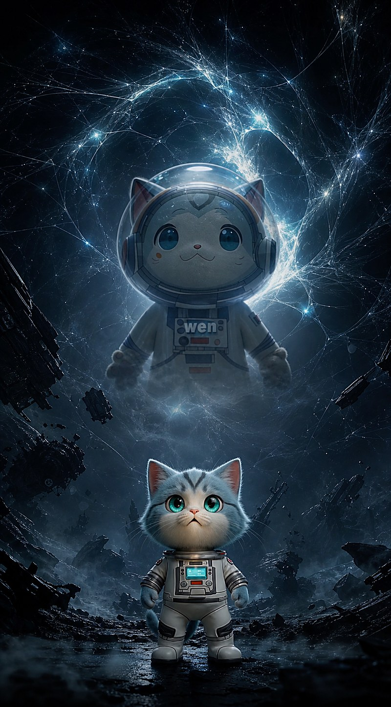

Proof Before Trust: Safety Checkpoints for Digital Assets in the Wen Open Lab
Almanac guide Written by the almanac itself. Every claim links to a model you can run and check.

Open code is only as strong as the questions people are allowed to ask it. On November 9, 2026 two readers looked closely at one of our models and found two real gaps. We did not hide them and we did not rebuild the design around them. We answered both with proof, fixed what was wrong, and turned the lesson into something everyone can use: safety checkpoints for digital assets.
What the readers found
- A fee that was off by one. Token-2022 rounds the transfer fee up; our example rounded it down. For 401 base units at 25 basis points the program expects a fee of 2, we passed 1, and the payment was rejected. It was a real bug. It is fixed, and two new tests prove it.
- A rule that checks less than it seems. A receiving account can require a memo on every payment, but Token-2022 only checks that a memo exists, not what it says. A payment with a wrong invoice number still passes. That is how the program is designed, so the architecture stays; we now say it plainly and added an off-chain reconciliation step with two tests.
Both answers, with the exact tests, are on the new Reader findings page. The Lab now runs 41 checks, all green.
A MathOverflow for open code
MathOverflow works because every question can earn an accepted answer, and every answer must hold up to proof. Nothing is settled by authority or by volume. The Lab borrows that idea and makes the proof executable:
- One question, one accepted answer. The answer names the test that proves it.
- An honest status. Fixed, Known limit or Not an issue, with the reason.
- Credit to the reader. By name only if they agree.
- Nothing deleted. Old answers stay, with the date they changed.
This keeps the original architecture intact. When the design is simply how Solana works, we do not bend it; we document the edge and add a check beside it. When the code is wrong, we fix it in the open. Either way, the next reader starts from proof, not from trust.
Seven safety checkpoints before you move a token
Each checkpoint comes from a model or a reader finding in the Lab, and each takes minutes:
- 1. Address. Take the address from two official sources and compare it character by character. Names and logos can be copied; the address cannot. How to check the real Wen address →
- 2. Owner program. Confirm the account is a token mint owned by SPL Token or Token-2022. A wallet or anything else is not a token. Walkthrough 10 →
- 3. Powers. Read who can still mint, freeze or move tokens: mint and freeze authority, permanent delegate, transfer hook, default frozen accounts. Walkthrough 8 · mint inspector →
- 4. Exact numbers. Compute fees exactly as the program does. Token-2022 rounds the transfer fee up; a value that is off by one base unit makes the payment fail. Reader finding Q1 →
- 5. Reconciliation. On-chain rules prove what they check and nothing more. The memo rule proves a memo exists, not that the invoice number is right, so match references off-chain. Reader finding Q2 →
- 6. Safe place first. Repeat every step on devnet with a new, empty wallet before anything real. Devnet coins have no value, mistakes cost nothing. Run it on devnet →
- 7. Proof, not promise. Every claim in the Lab has a test that anyone can run with npm test, including the cases that must fail. If a reader finds a gap, it becomes a new test. Verification log, 41 checks →
Together they answer three questions that protect any holder: is this the right token, what can its issuer still do, and do the numbers add up?
Ask the Lab a question
Found something odd in a model or a walkthrough? Open an issue in the repository. If it holds up, it gets an answer, a test and a line in the changelog in the same update, and it joins the Reader findings.
Questions people ask
What is a safety checkpoint here?
A short, repeatable check that anyone can run before holding, sending or building on a token: the address, the owner program, the powers, exact fees, reconciliation, a devnet run and a test that proves the claim.
Why compare the Lab with MathOverflow?
On MathOverflow a question gets an accepted answer with a proof. The Lab does the same with code: each reader question gets an answer, a status and a test anyone can run.
Do these checkpoints make a token safe?
No checklist can promise that. They show which token you are looking at, what its rules are and whether the numbers add up. Value and intentions are a separate question, and this is not financial advice.
Spoken by Wen, for the community. Example code, not audited. Devnet only, with a new empty wallet. Educational content, not financial advice.